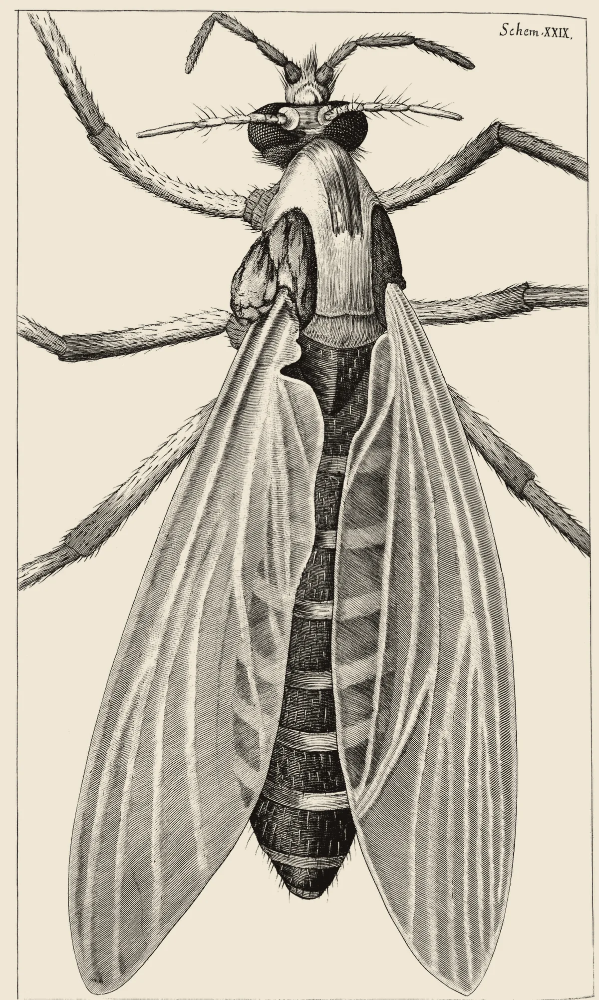

· Edición 44 · 3 min de lectura
Mosquitos con una bacteria bajaron el dengue 95% en Medellín y Bello

Mosquitos con una bacteria bajaron el dengue 95% en Medellín y Bello
En pocas palabras. Una revisión de 64 estudios, presentada esta semana en Washington, concluyó que soltar mosquitos con la bacteria Wolbachia es el método contra el mosquito del dengue con mejor evidencia. A Colombia le toca de cerca: el Valle de Aburrá fue de los primeros lugares del mundo en usarlo en ciudades enteras, y el país lleva más de 83.000 casos este año. La OMS decide si lo recomienda; en la casa sigue sirviendo no dejar agua quieta.
El dato curioso. A mediados de los años veinte, el entomólogo Marshall Hertig y el patólogo S. Burt Wolbach salieron de sus laboratorios de Harvard a recoger insectos cerca de Boston. En 1924 describieron una bacteria diminuta dentro del mosquito común de las casas. En 1936, Hertig la bautizó en honor a su colega: Wolbachia pipientis. Hoy se calcula que vive en cerca de la mitad de las especies de insectos del planeta.
Qué mejoró. A finales de agosto de 2024 circuló en Cali un video: un hombre en moto soltaba mosquitos en plena calle. Hubo alarma, hasta que la Secretaría de Salud explicó que era a propósito: llevaban Wolbachia.
Antes se había hecho lo mismo en Bello, Medellín e Itagüí, donde viven unos 3,3 millones de personas. Donde la bacteria se estableció, los casos de dengue notificados cayeron 95% en Bello y Medellín y 97% en Itagüí frente a los años anteriores, según un estudio de 2023.
1924
El hallazgo
Hertig y Wolbach describen la bacteria en el mosquito común de las casas.
2011
Llega al mosquito del dengue
Un equipo en Australia logra que el Aedes aegypti la porte y muestra que bloquea el virus.
2015
Primera liberación en Colombia
En el barrio París, de Bello.
2016 a 2022
Bello, Medellín e Itagüí
Liberaciones en las tres ciudades completas.
2021
El ensayo con sorteo
En Yogyakarta (Indonesia), 77% menos dengue en las zonas con los mosquitos y 86% menos hospitalizaciones.
Octubre de 2026
La revisión de 64 estudios
Ningún otro método contra el mosquito tiene una evidencia tan consistente.
Primer trimestre de 2027Pendiente
La OMS revisa
Un grupo de expertos decidiría si lo recomienda a los países.
Fuente: The Scientist; Walker y otros, Nature (2011); World Mosquito Program; Velez y otros y Utarini y otros; Infection Control Today; OMS
¿Por qué mejoró?
- No mata al mosquito: lo reemplaza. Dentro del insecto, la bacteria no deja que el virus se multiplique bien.
- Se hereda sola. La madre la pasa a los huevos, y si un macho con la bacteria se cruza con una hembra sin ella, los huevos no nacen. En pocas generaciones, casi todos la llevan.
- Se fabrica en serie. En Curitiba (Brasil) funciona desde 2025 la fábrica de mosquitos más grande del mundo: más de 5.000 millones al año.
Ya pasó antes. En 1954, en la isla de Curaçao, Estados Unidos soltó moscas estériles contra el gusano barrenador del ganado. En unas siete semanas, la plaga desapareció.
El patrón. A veces el mejor aliado contra un insecto es otro de su misma especie.
¿Qué lo amenaza?
- El calor. Un estudio preliminar de 2026 calcula que cerca de los 30 °C la bacteria se establece y se sostiene peor.
- Que se diluya. En 2024, un estudio la halló en solo 10 a 33 de cada 100 mosquitos de Medellín; otro, de 2026, en 60 a casi 100. Depende de dónde y cómo se mida.
Pero ojo.
- Hay un solo ensayo con sorteo. Y la misma revisión advierte que más de la mitad de los estudios tienen riesgo serio de sesgo.
- En Cali, menos. La Alcaldía reportó caídas de 41% a 54%.
- Hay quien pide una pausa. Un artículo de 2026 en la revista Infectious Diseases dice que falta una evaluación independiente.
- El dengue sigue ahí. Hasta finales de septiembre, el país sumaba 83.556 casos y 56 muertes confirmadas, según el Instituto Nacional de Salud.
Qué hacer con esto
Cómo prepararse. Los mosquitos con Wolbachia no reemplazan lo de siempre: vaciar o tapar cada semana lo que guarde agua quieta. Ante fiebre alta, ir al médico y no automedicarse. (Conocimiento general.)
Ojo con el cuento. «Bajó 95%» no dice frente a qué. Conviene preguntar si se comparó con barrios sin el método, como en Indonesia, o solo con años anteriores, que pudieron ser de epidemia.
Dos lecturas
Las dos posturas sobre el tema, en su mejor versión
Ampliarlo ya. El dengue no espera. Un ensayo con sorteo y varias ciudades muestran caídas grandes, y una liberación bien hecha protege por años. Cada temporada sin actuar deja casos que se podían evitar.
Pausar y medir aparte. Casi todos los datos los produce el mismo programa que promueve el método. Antes de llevarlo a más ciudades, conviene una evaluación independiente que descarte el clima o las otras medidas.
Quién decide y cuándo
Quién decide. En Colombia, cada secretaría de salud, con el World Mosquito Program. En el mundo, la OMS, que revisa si lo recomienda.
Cuándo. El grupo de la OMS se reuniría en el primer trimestre de 2027, según Infection Control Today. No hay fecha exacta.
Cómo participar. Las liberaciones empiezan con reuniones en el barrio, donde los vecinos preguntan antes de que se suelte el primer mosquito.
Seguimiento de la decisión
Pendiente · sin fecha fija
Organización Mundial de la Salud (OMS), con un grupo de expertos que elabora sus guías: Decidir si recomienda a los países soltar mosquitos con Wolbachia para controlar el dengue, después de una revisión nueva de toda la evidencia.
La OMS anunció la revisión el 11 de junio de 2026. Según Infection Control Today, el grupo de la guía se reuniría en el primer trimestre de 2027; no hay fecha exacta.
La paradoja del día
Lo más absurdo de la edición, en dos líneas
Para tener menos dengue, Medellín soltó más mosquitos, no menos. Y el gran avance contra el mosquito consistió en contagiarle una bacteria.
Para conversar
La pregunta. ¿Dejaría que soltaran mosquitos en su cuadra si le prometen menos dengue? ¿Qué pruebas pediría antes de decir que sí?
Para leer más
Libros para seguir con el tema
Yo contengo multitudes, de Ed Yong (Debate, 2017). El periodista científico británico cuenta cómo los microbios moldean la vida de los animales y de las personas, y dedica páginas a Wolbachia, la bacteria que este libro presenta como una de las más exitosas del planeta.
¿Le interesa ver las fuentes?
Todos los documentos y datos que usamos
27 fuentes: 10 académicas, 2 oficiales, 1 de datos, 4 de organizaciones, 9 de prensa, 1 de referencia.
- Prensa Infection Control Today. Dengue Prevention: Systematic Review Evaluates Wolbachia and Other Mosquito Control Methods (IDWeek 2026)
- Académica Velez y otros, PLOS Neglected Tropical Diseases (2023), en PMC. Reduced dengue incidence following city-wide wMel Wolbachia mosquito releases throughout three Colombian cities: interrupted time series analysis and a prospective case-control study
- Académica Velez y otros, PLOS Neglected Tropical Diseases (2023), en PMC. Large-scale releases and establishment of wMel Wolbachia in Aedes aegypti mosquitoes throughout the cities of Bello, Medellín and Itagüí, Colombia
- Académica Utarini y otros, New England Journal of Medicine (2021), en PMC. Efficacy of Wolbachia-Infected Mosquito Deployments for the Control of Dengue
- Académica Walker y otros, Nature (2011), vía RePEc. The wMel Wolbachia strain blocks dengue and invades caged Aedes aegypti populations
- Académica Barrientos y otros, PLOS Neglected Tropical Diseases (agosto de 2026), en PubMed. Wolbachia prevalence in Aedes aegypti across five comunas of Medellín, Colombia: implications for post-release surveillance
- Académica Calle-Tobón y otros, Acta Tropica (2024), en PubMed. Evaluation of Wolbachia infection in Aedes aegypti suggests low prevalence and highly heterogeneous distribution in Medellín, Colombia
- Académica Infectious Diseases (2026), Taylor & Francis. Wolbachia releases for dengue control: why the evidence supports a pause and independent re-evaluation
- Académica bioRxiv (preprint, julio de 2026; sin revisión de pares). Temperature variation as a driver of Wolbachia release efficacy: implications for dengue control in warming climates
- Académica Transactions of the Royal Society of Tropical Medicine and Hygiene (2026), en PubMed. Impact of Wolbachia-infected Aedes aegypti on dengue incidence in endemic regions: a systematic review and meta-analysis
- Oficial Organización Mundial de la Salud. WHO update on the assessment of Wolbachia population replacement for the control of Aedes-borne diseases (11 de junio de 2026)
- Oficial Alcaldía de Santiago de Cali. Esta es la estrategia de control biológico de mosquitos que reducirá la transmisión del dengue
- Prensa El País (Cali). ¿Por qué en Cali están liberando mosquitos desde motocicletas?
- Organización World Mosquito Program. Colombia: avances del método Wolbachia
- Organización World Mosquito Program. Inside Wolbito do Brasil in Curitiba: the world's largest mosquito biofactory
- Prensa Gazeta do Povo. Curitiba libera «wolbitos» contra a dengue
- Prensa La FM, con datos del Instituto Nacional de Salud. Dengue en Colombia: aumentan los casos en varias regiones y ya van 56 muertes
- Prensa The Scientist (invierno de 2024). Wolbachia Turns 100: The Journey of a Triumphant Endosymbiont
- Datos LPSN, Colección Alemana de Microorganismos (DSMZ). Species Wolbachia pipientis Hertig 1936
- Académica Revisión académica (2025), en PMC. Symbiosis of intracellular bacteria Wolbachia with insects: a hundred years of study summarized
- Organización World Food Prize Foundation. 1992 laureates: Edward F. Knipling and Raymond C. Bushland
- Organización Sociedad Estadounidense de Medicina Tropical e Higiene (ASTMH). Annual Meeting, November 18-22, 2026
- Referencia Open Library. I Contain Multitudes / Yo contengo multitudes, de Ed Yong (ediciones)
- Prensa Nature (noticia, octubre de 2026). A first for CRISPR: powerful prime editing alters DNA directly in the human body
- Prensa Fierce Biotech. Merck, Moderna's personalized cancer vaccine slows recurrence in phase 3, setting up approval push
- Prensa Agência Brasil. Ministério da Saúde suspende vacina contra a dengue do Butantan
- Prensa Bernama (agencia dpa). Informe de la OMS sobre calor extremo, embarazo y niños (21 de octubre de 2026)
Glosario
Las palabras técnicas, explicadas
- Wolbachia: bacteria que vive dentro de las células de muchos insectos y que, en el mosquito del dengue, frena al virus.
- Aedes aegypti: el mosquito que transmite el dengue, el zika y el chikunguña. Se cría en agua quieta y limpia.
- Ensayo con sorteo: estudio en el que se escoge al azar qué zonas reciben el método y cuáles no, para comparar de forma justa.
- Revisión sistemática: estudio que reúne y compara todos los estudios publicados sobre una pregunta.
- Casos notificados: los casos que los médicos reportan al sistema de vigilancia; no siempre están confirmados en laboratorio.
- Estudio preliminar (preprint): trabajo publicado antes de que otros científicos lo revisen.
- Riesgo de sesgo: posibilidad de que el diseño de un estudio exagere o reduzca el efecto que mide.
Nota metodológica
Cómo se hizo esta edición y qué no pudimos verificar
La mezcla de la semana. El lunes, el martes y el miércoles fueron nudos; el jueves, un avance (el embarazo adolescente), y el viernes, un cambio de fondo (el envejecimiento). Faltaban un tema de ciencia o tecnología y un tema del mundo, y hoy era el último día. Además, es el primer sábado de ciencia y tecnología.
Elegimos un tema que cubre ciencia y salud, y que es del mundo a medias. El hecho que lo reactiva es internacional, la revisión presentada en Washington, y la evidencia viene de Indonesia, Brasil y Australia; la decisión pendiente es de la OMS. Pero el centro de la historia es colombiano. No encontramos un tema más claramente del mundo que llegara a 19 puntos con un canal concreto a Colombia.
Pasa la pregunta de entrada (importará en diez años, toca a millones sin hacer ruido y hay algo que decidir y que hacer en casa) y el filtro del avance: una serie de casos de dengue de varios años antes y después de las liberaciones, un mecanismo conocido y amenazas concretas.
Puntaje. De 1 a 3 en cada criterio; peso en la vida y horizonte valen doble (máximo 24).
| Tema | Puerta | Alcance | Peso | Horizonte | Cercanía | Margen | Mirada | Total | Resultado |
|---|---|---|---|---|---|---|---|---|---|
| Mosquitos con Wolbachia contra el dengue (mundo y Colombia) | avance | 3 | 3 | 3 | 3 | 2 | 2 | 22 | Elegido (edición 44) |
| Calor, embarazo y niños, informe de la OMS (mundo) | fondo | 3 | 3 | 3 | 2 | 1 | 1 | 20 | Ya tratamos el calor y la salud |
| Vacuna de dosis única contra el dengue, Butantan | avance | 3 | 3 | 3 | 2 | 1 | 2 | 20 | No pasa el filtro: suspendida, sin serie de mejora |
| Edición genética dentro del cuerpo (mundo) | fondo | 1 | 3 | 3 | 1 | 1 | 2 | 17 | Un paciente, sin resultados hasta 2027 |
| Vacuna personalizada contra el melanoma (mundo) | avance | 1 | 3 | 3 | 1 | 1 | 1 | 16 | Datos completos aún no publicados |
| Cráter Silverpit (mundo) | ninguna | 1 | 1 | 1 | 1 | 1 | 2 | 9 | No pasa la pregunta de entrada |
Ningún segundo tema llega a 19 con novedad propia, así que hoy hay una sola edición.
Hicimos unas 40 búsquedas en español, inglés y portugués. No pudimos abrir los documentos completos; trabajamos con resúmenes y resultados de búsqueda. De 27 fuentes, 18 no son de prensa.
Quedó sin verificar o con límites:
- La revisión de 64 estudios es un póster de congreso; no vimos el resumen original, solo la nota de Infection Control Today. El 77% de esa revisión coincide con el del ensayo de Indonesia, que sí está publicado. Otra revisión de 2026 calcula una caída de 85%.
- Las caídas de 95% y 97% del Valle de Aburrá comparan con los años previos, no con barrios sin mosquitos, y el estudio lo firma el mismo programa que hizo las liberaciones.
- El estudio de Medellín que fechamos en 2023 tomó sus muestras ese año y se publicó en 2024; el de 2026 midió en cinco comunas con otros métodos. No son comparables uno a uno.
- El 41% a 54% de Cali es una cifra de la Alcaldía, de 2024, sin evaluación independiente.
- Las cifras de dengue de 2026 son del Instituto Nacional de Salud con corte en la semana 38, citadas por La FM; no vimos el boletín. Otro medio da cifras algo mayores con corte en la semana 40.
- La fecha de la reunión de la OMS viene de una sola fuente.
- La recomendación de no automedicarse va marcada como conocimiento general.
El grabado es de Micrographia, de Robert Hooke (1665), tomado de Wikimedia Commons: un mosquito visto al microscopio.
El libro: no encontramos Yo contengo multitudes en el catálogo de Santo & Seña, así que va sin enlace. La editorial y el año de la edición en español los tomamos de Open Library.